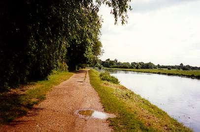
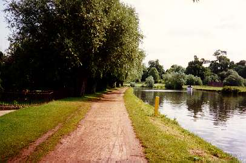
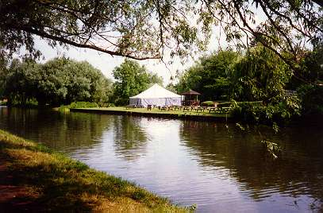
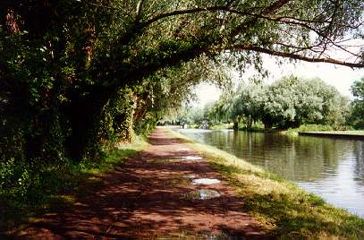
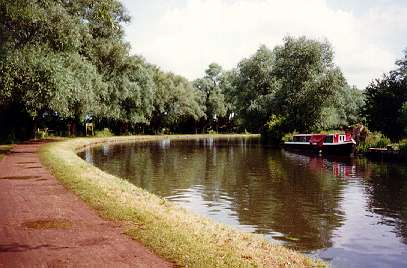

« Chesterton | Fen Ditton | To Bait's Bite Lock »

The Reach is the widest, straighest section of the river, and is suitable for side-by-side contests.

Ditton Corner, named after the nearby town Fen Ditton, marks the bottom of the Reach.

The Plough, a favourite place for watching May Bumps.

Plough Reach.

Grassy Corner, always the scene of frantic action in Bumps.
« Chesterton | Fen Ditton | To Bait's Bite Lock »